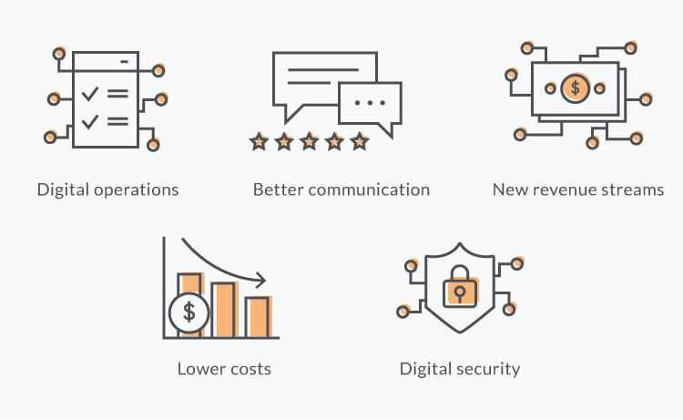
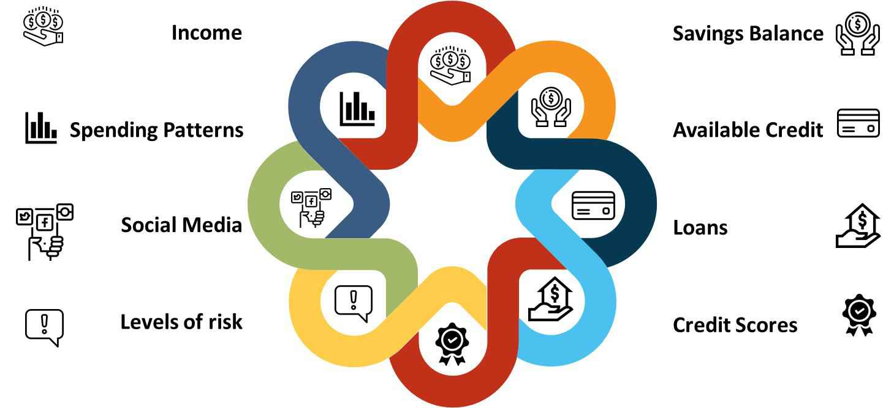

5 ways in which a financial institution can begin its digital transformation
Updated On : January 2019Transformation results when there's a vision and vision needs a strategy. To carry out a strategy, financial institutions must have strong collaborations. Digital has become a critical power in banking services with financial institutions effectively leveraging digital technologies and accelerating the customer experience. Digital transformation can lead to better brand recognition, an increased customer base, an enhanced customer experience, competitive differentiation and booming revenues.
Let's look at 5 ways in which a financial institution can begin its digital journey
-
Omni channel approach
With technology ruling, customers are tech savvy and switching to different channels like mobile phones, tablets, laptops, desktops, voice assistants, etc., to conduct business. Customers expect their banks to know their likes, dislikes and needs, and look for personalized and unique experience from their banks. Financial institutions will have to focus on delivering a flawless customer experience across all the channels.
Whether it is opening an account, conducting transactions, checking account balance, wealth management or customer support, it is essential to deliver an omni-channel experience to customers who prefer using their smart phones to conduct business rather than visiting a branch.
Here are some of the key benefits of the Omni channel banking
 -
Big Data Analysis
Using Big Data could help with personalization and make it a memorable experience for the customer. A whole lot of information can be collected from social media sites, past purchases and browsing history which helps understand the customer better and offer personalized and customized service. This information is a great source to process and generate recommendations for customers when they log in.
The software, which gathers product write up and reviews by financial experts or from social networking sites can display reviews in the specific section of the website. A database management software linked to the cloud can be used to record data obtained about customer activity and interaction in real time.
Big Data and Analytics in Banking
 -
Bots
Bots with Machine learning and Artificial Intelligence can give exceptional service to all customers, irrespective of the size of their bank account, by equipping them with a 24 hours' personal assistant and a personal banker. Users nowadays no longer call customer care for checking balances or conducting transfers, but do it through a mobile app. Bots can take over and ease out the frustrating ordeals of customers when trying to find specific details like cost of fund transfer, a routing number or asking for a historic account statement.
Customers love the feeling of being pampered with a personal banker who can be at their beck and also help them learn about saving money, earning more rewards, and providing wealth building and management advice.
-
Change management capabilities
In the journey to digital transformation, financial institutions along with employees should be prepared for changes that are not incremental. A robust change management capability should be built in. Employees need to be engaged ahead of a program and explained the relevance and magnitude of the changes. Their concerns need to be addressed. A clear overview of the changes provides them with a clear vision and roadmap.
The company should be agile and should be ready to make extensive changes in their culture and operations and adopt the right mind-set. Extensive retooling will be required, as a lot of banks and credit unions are still using highly outdated models.
-
Build Partnerships for Expanded Ecosystems
With the advent of open banking, collaboration with the traditional banks, fintech firms, big tech organizations and even firms outside of banking, will be crucial in the new banking ecosystem. Traditional banks, even if not a participant, can get together with more agile organizations and provide human resources, capital, distribution outlets and huge data banks.
This future banking ecosystem calls for collaboration of organizations and focus on the element of their environment that they can control. They should combine the best products to bring in desired benefits at lower costs for customers, businesses and the economy as a whole.
For a digital transformation in a company, the vision of the goal and why that goal needs to be achieved should be communicated to all the leaders and they should be made accountable for the outcome. Keeping in mind that there will be challenges and they can be overcome, the way forward is to learn on the go. New ways to speed up revenue growth will reveal itself and financial institutions will just have to take the first step to be a part of the digital transformation revolution.
References -
- Authors: Staff Writer, The Financial Brand, Year Published: 2018, Publication Title: The Four Pillars of Digital Transformation in Banking, Accessed Date: Jan 2019
- Authors: Jim Marous, Year Published: 2018, Publication Title:5 Actions To Accelerate Your Digital Transformation Journey, Accessed Date: Jan 2019
- Authors: William Jameson, Year Published: 2017, Publication Title: The State of Digital Transformation in Financial Services, Accessed Date: Jan 2019
- Authors: Balázs Vinnai, Year Published: 2018, Publication Title: 5 reasons why banks still struggle with digital transformation, Accessed Date: Jan 2019
- Authors: PricewaterhouseCoopers, Year Published: 2019, Publication Title: Digital transformation in financial services, Accessed Date: Jan 2019
- Authors: Calvin Hennick, Year Published: 2018, Publication Title: How Digital Transformation Is Reshaping Financial Services, Accessed Date: Jan 2019
- Authors: Graham Wright, Year Published: 2018, Publication Title: The Digital Transformation: Four Opportunities and Three Threats for Traditional Financial Institutions, Accessed Date: Jan 2019
- Authors:Eric Emin Wood, Year Published: 2018, Publication Title: Most financial institutions embracing digital transformation in theory, but not practice, Accessed Date: Jan 2019
- Authors:Deloitte Touche Tohmatsu Limited, Year Published: 2018, Publication Title: Digital transformation in financial services - The need to rewire organizational DNA, Accessed Date: Jan 2019
Leave Comments :
© Nelito Systems Ltd. Terms & Privacy
Comments :